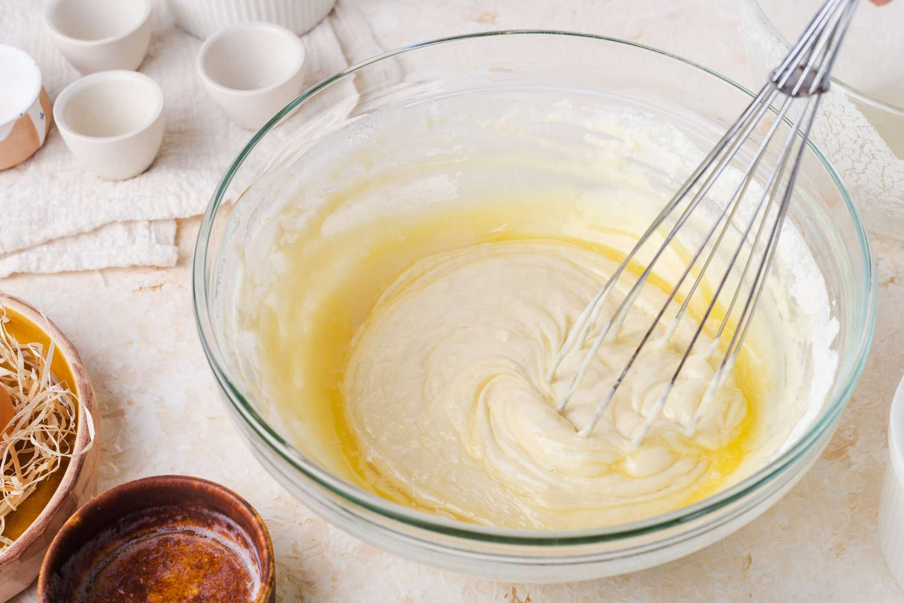

Step 1: Gather Ingredients

Flour, eggs, milk, sugar, and baking powder.
NextStep 2: Mix Ingredients
Whisk all ingredients in a bowl until smooth.
Back NextStep 3: Cook the Pancakes
Pour batter onto a heated pan and cook both sides.
Back NextStep 4: Serve and Enjoy
Top with syrup or fruits and enjoy your pancakes!
Back Restart